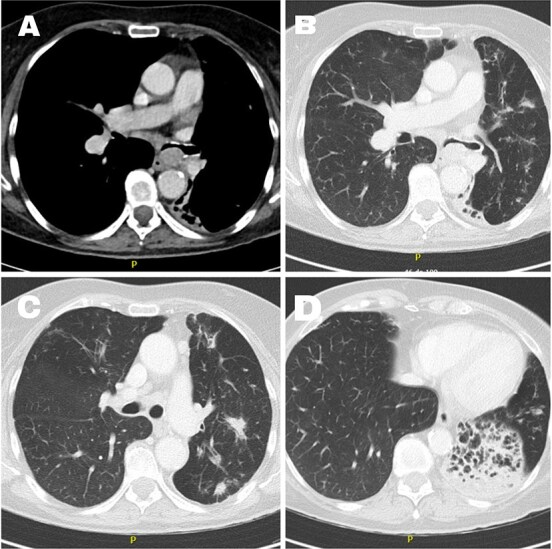

Тема 1
Абсцесс и гангрена лёгкого. Бронхоэктатическая болезнь
Чем абсцесс отличается от гангрены и от бронхоэктатической болезни, чем они кончаются, что видно на снимке и когда нужен хирург.
Разобранные темы по нескольким учебникам сразу.
Чем абсцесс отличается от гангрены и от бронхоэктатической болезни, чем они кончаются, что видно на снимке и когда нужен хирург.
Эмпиема плевры: откуда берётся гной в плевральной полости, какими бывают осумкованные формы, чем грозит прорыв, когда хватает дренажа и когда нужна операция.

Рак лёгкого: чем центральная форма отличается от периферической, почему она даёт кашель и ателектаз, как выглядит синдром верхней полой вены, чем подтверждают диагноз и какие операции делают.
Заболевания артерий: почему обрывается кровоток, откуда берутся эмболы, чем отличается тромбоз от эмболии, как выглядит острая ишемия и когда счёт идёт на часы.
Вопросы к каждой теме: с выбором ответа и открытые.
Пока пусто.
Список вопросов к экзамену по предмету.
Пока пусто.
Учебники и книги по предмету.